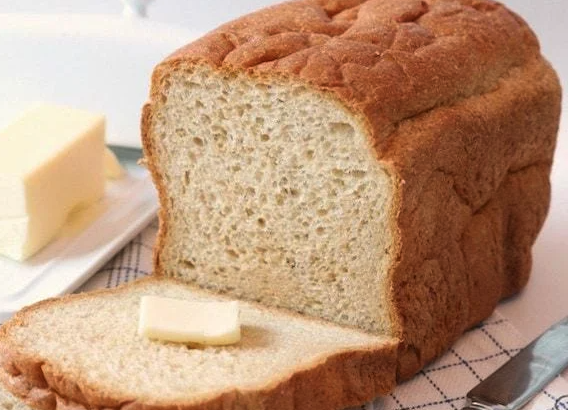

Bread recipe

Description
I love to cook and I am a pretty confident baker, however, one thing Ive struggled with is finding a really incredible bread recipe. I know- kind of funny being as there are a zillion out there and bread is one of those basics” that almost anyone can make themselves.
Nevertheless, I keep trying new recipes and have finally found one I really like and have gotten good results from! Even better- its easy and from start to finish it takes just over 2 hours!
Ingredients
- 2 cups warm water
- 1/2 cup white sugar
- 1 1/2 teaspoons salt
- 1/4 cup vegetable oil
- 5-6 cups flour
Steps
- In a large bowl, dissolve the sugar in warm water and then stir in yeast. Allow to proof until yeast resembles a creamy foam, about 5 minutes.
- Mix salt and oil into the yeast. Mix in flour one cup at a time.
- Knead dough for 7 minutes. Place in a well oiled bowl, and turn dough to coat. Cover with a damp cloth. Allow to rise until doubled in bulk, about 1 hour.
- Punch dough down. Knead for 1 minute and divide in half. Shape into loaves and place into two greased 9×5 inch loaf pans. Allow to rise for 30 minutes, or until dough has risen 1 inch above pans
- Bake at 350 degrees F (175 degrees C) for 30-40 minutes
- Cool, brush with butter and enjoy!